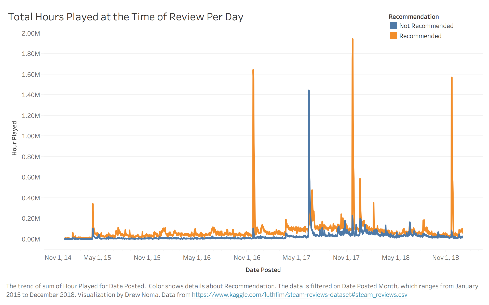

Prototype
Note: After doing a little digging, the large spikes coincide with big sales/holidays: Black Friday/Thanksgiving, etc. While they may feel like outliers at first, there is plenty of potential for showing more about how these big sales affect the actual helpfulness of reviews especially around the holidays. This is because people tend to receive games as gifts or buy the games themselves, so they may or may not get into the game and may leave unhelpful, negative reviews. The same could go the other way. As the sheer increase in number of people playing a game leads to an increase in number of reviews, it could be beneficial to take a look into the number of reviews plus the hours played of each review to get a better picture of what's going on those days.
